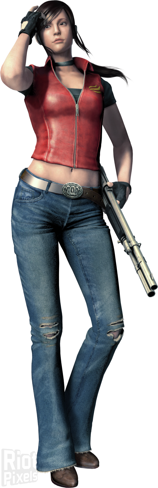

Claire Redfield (クレア・レッドフィールド) es un personaje de la serie de
videojuegos de Survival Horror, Resident Evil. Es la hermana menor de Chris Redfield, fue compañera de
Leon S. Kennedy en Resident Evil 2, también aparece en CODE: Veronica así como en la película
Degeneration y en los juegos The Darkside Chronicles y Operation Raccoon City, siendo la compañera de
Leon en la misión de proteger a Sherry. Es una de los pocos supervivientes del desastre en Raccoon City.
Antes del comienzo de su aventura, Claire era una estudiante universitaria quien al no tener noticias de
su hermano, decidió ir a buscarlo en Raccoon City, ignorando los peligros que estaban aguardando por
ella. Dicha experiencia cambió su vida para siempre.

Chris Redfield (クリス・レッドフィールド Kurisu Reddofīrudo?) fue el primer personaje
jugable de toda la saga apareciendo por primera vez en Resident Evil. Es el hermano mayor de Claire
Redfield, fue un miembro destacado en S.T.A.R.S., mantiene un lazo fuerte con su ex-compañera Jill
Valentine y es muy amigo de Barry Burton. Actualmente trabaja en la B.S.A.A. como Oficial Comandante de
la Rama Norteamericana y tambien como comandante del escuadrón de élite Hound Wolf.
Chris es considerado por muchos fans y por fuentes oficiales de Capcom como uno de los protagonistas más
importantes de la franquicia. A sus 25 años de edad, fue uno de los pocos sobrevivientes del
incidente de la Mansión Spencer; por ello sintió el enorme deseo de hacer justicia y vengarse del daño
provocado por Umbrella, y principalmente por Albert Wesker, quien fue capitán de su equipo y quien los
usó para beneficio propio.
Ada Wong (エイダ・ウォン Eida Won?) es un personaje perteneciente a la saga Resident
Evil y que apareció por primera vez en Resident Evil 2. Se trata de una misteriosa agente espía
estadounidense de rasgos orientales.
La vida pasada de Ada Wong antes de 1998 es un completo misterio. Tanto su origen étnico como su
nacionalidad actual son totalmente desconocidos, aunque debido a sus rasgos se la puede identificar como
"asiática". Su único dato biográfico fiable es su año de nacimiento (1974). Incluso su nombre, Ada Wong,
no se sabe si es real. En 1998, Ada era una espía corporativa trabajando para un competidor no
identificado de la Corporación Umbrella, que tenía la intención de adquirir de parte de Umbrella todo
tipo de armas bio-orgánicas y una muestra del virus-G desarrollado por William Birkin.
 Por año
Por Consola
Contacto
Por año
Por Consola
Contacto